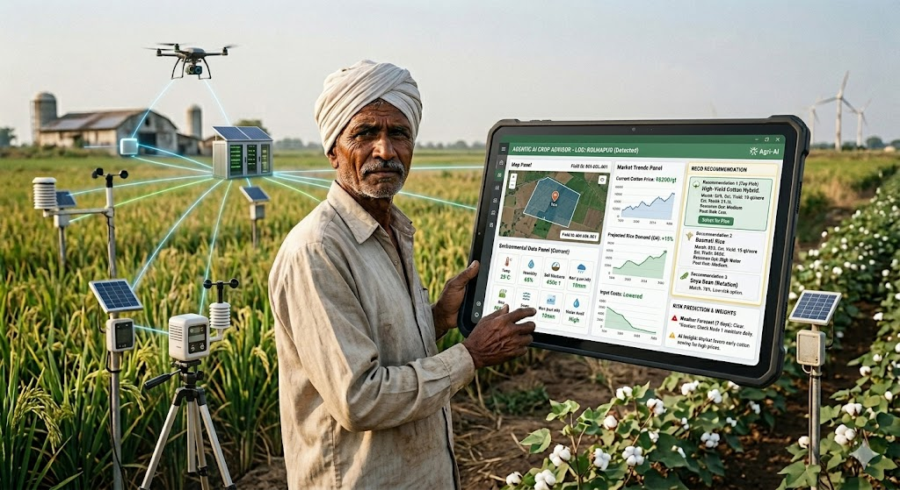

Revolutionizing Farming With Intelligent AI Agents
KrishiMitra AI helps farmers make smarter crop decisions, monitor crop health, predict risks, and improve productivity using real-time AI-powered agricultural intelligence.
92%
Crop Accuracy
24/7
AI Monitoring
15+
AI Agents

Weather AI
Rain Prediction: 87%
Crop AI
Best Crop: Soybean
Intelligent Farming Assistance
AI-powered modules helping farmers optimize productivity, reduce risks, and maximize profits.
Weather Intelligence
Real-time weather analysis with rainfall prediction and farming recommendations.
Crop Recommendation
AI-powered profitable crop suggestions based on soil and environmental conditions.
AI Farming Assistant
Interactive AI chatbot supporting farmers with guidance in simple language.
Market Trend Analysis
Analyze crop market trends and identify profitable opportunities.
Disease Detection
Upload crop images for AI-powered disease analysis and prevention guidance.
Government Schemes
Discover farming schemes, subsidies, and benefits personalized for farmers.
Specialized AI Agents Working Together
Simple AI Workflow For Farmers
Enter Farm Details
Add soil, location, and crop information.
AI Analysis
AI agents analyze weather, soil, and risks.
Receive Recommendations
Get personalized farming insights and predictions.
Track Progress
Monitor crops and receive intelligent alerts.
Trusted By Farmers
“KrishiMitra AI helped me identify crop diseases early and saved my soybean farm.”
— Ramesh Patil
“The market prediction feature improved my crop profit significantly.”
— Sunita Jadhav
“Very easy to use even for farmers with limited technical knowledge.”
— Mahadev Shinde
Start Your Smart Farming Journey Today
Experience AI-powered agricultural intelligence designed for modern farmers.
Get Started